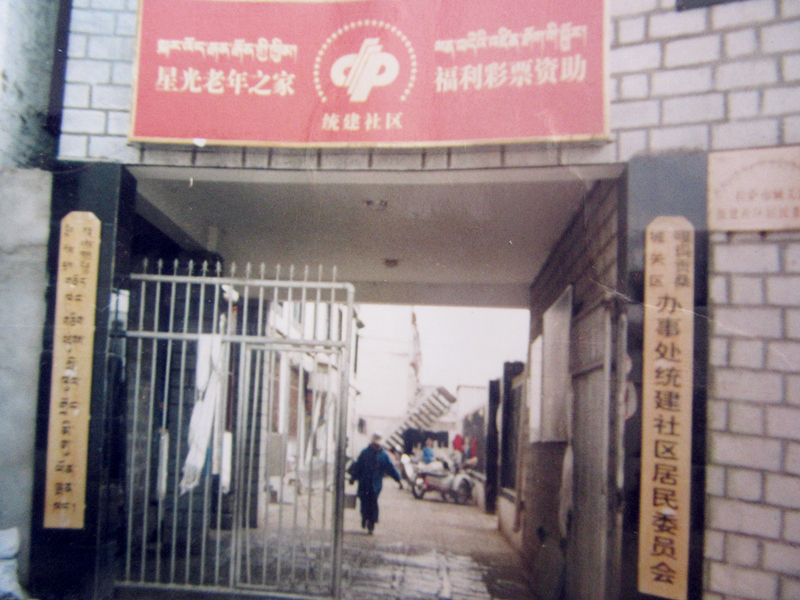

统建社区简介
嘎玛贡桑办事处统建社区居委会位于城关区东部，辖区东邻藏热路，西接江苏东路，南邻江苏路，北邻嘎玛贡桑路。辖区内主要居住的是原失地农民和自治区退休工作人员，由于辖区建筑年度久远，在城关区政府支持下辖区正在进行全面的基层设施改造。统建社区居委会始建于1994年，辖区面积0.56平方公里，驻地部队一个(高炮二连)，幼儿园1所，加油站1个，自治区退休基地3个。
社区体系介绍
嘎玛贡桑办事处统建社区居委会位于城关区东部，辖区东邻藏热路，西接江苏东路，南邻江苏路，北邻嘎玛贡桑路。辖区内主要居住的是原失地农民和自治区退休工作人员，由于辖区建筑年度久远，在城关区政府支持下辖区正在进行全面的基层设施改造。统建社区居委会始建于1994年，辖区面积0.56平方公里，驻地部队一个(高炮二连)，幼儿园1所，加油站1个，自治区退休基地3个。